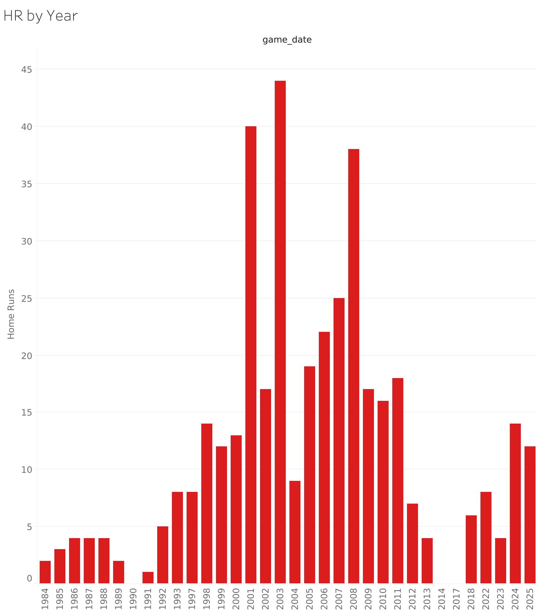

Can you trust the number on the chart?
You've made this chart a thousand times. Years across the horizontal axis. A count on the vertical. Done before the coffee cools.
You didn't make this one. An agent did. It wrote the workbook as XML, Tableau's MCP server checked it line by line, and it published to Tableau Cloud without anyone opening a browser.
The bars say 400. So ask what you'd ask of anybody's chart: how do I know that's right?
The game. Sunday, August 7, 1988. Twins at Yankees, 5–1. At the top of his card Poppa wrote four guesses at the crowd: 49,000. 48,000. 54,875. 51,500. Then the real number, 53,176, circled. Can you trust the number? He checked.

The spec was five lines: the measure, what to slice it by, the sort, the title, the color. The agent turned that into a .twb, the same file Desktop saves. The server sent back errors by line number until it was right, then published it. The proof is a PNG and a CSV, and if the CSV doesn't sum to 400, nothing publishes.
One snag worth knowing: Tableau's newest strict schema won't validate, because of two errors in Tableau's own published schema. So the agent writes the older grammar, the one Tableau 2026.1 still writes when you download a workbook, and the server takes it.
The red bars took. The font didn't show up in the render. The number and the sort held.
The 400 is home runs witnessed, written down once in dbt: a play in a game I attended with event code 23. Every bar is that definition by year. Five other engines answer the same question through their own semantic layers and say 400 too. That's in the standings.
The chart is the photo. The definition is the contract. That's why the lineup leads off with a bar chart and not an agent: it's where you're standing, and it's a question you already know how to ask.
One workbook, one sheet, my data at demo scale. No dashboards.
You need a Tableau Cloud site you can publish to, a personal access token, Node, and Claude Code or any agent that speaks MCP.
npm install @tableau/mcp-server. Point it at your site with four environment variables: SERVER, SITE_NAME, PAT_NAME, PAT_VALUE.publish-workbook tool ships switched off. In the version I used, 4.8.1, it's a flag called authoring-tools in the package's build/features.json. Set it to true. While you're there, expose only what you need: INCLUDE_TOOLS=list-projects,publish-workbook..twb.publish-workbook. If the file is wrong you get errors by line number and nothing publishes. Hand them back to the agent and go again.As of September 2026, on version 4.8.1. The MCP server moves fast; check its README for the current switch.
Next, batting 2nd: What is a home run? →